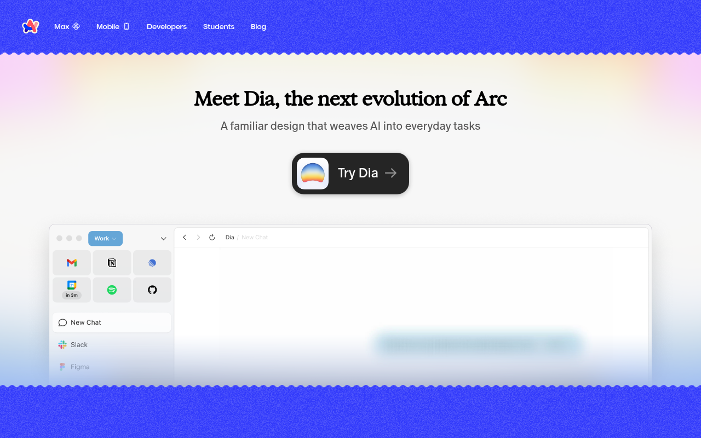

Design System Report
Arc Browser — 실제 CSS 기반 분석
arc.net의 디자인 시스템 분석 — 브랜드 블루(#3139FB), 딥 네이비 배경(#000354), 크림 텍스트(#FFFCEC)의 감성적 다크 브라우저 미학.

Quick Start
5분 안에 Arc처럼 만들기
1 · 폰트
body {
font-family:
"Marlin Soft SQ",
"Marlin Soft Basic",
-apple-system,
BlinkMacSystemFont,
sans-serif;
font-weight: 400;
}
2 · 다크 배경 + 크림 텍스트
:root {
--bg: #000354;
--fg: #FFFCEC;
}
body {
background: var(--bg);
color: var(--fg);
}
3 · 브랜드 블루
:root {
--colors-brandBlue:
#3139FB;
--colors-brandDarkBlue:
#000354;
--colors-brandOffwhite:
#FFFCEC;
}
절대 하지 말아야 할 것 하나: 텍스트에 순백
#FFFFFF을 쓰는 것. Arc는 따뜻한 크림 #FFFCEC를 텍스트와 배경 모두에 사용한다. 흰색으로 교체하면 Arc 특유의 따뜻한 다크 분위기가 사라진다.
Source
arc.net
React SPA + Stitches
Fetched
2026.04.13
CSS 토큰 직접 추출
Primary Font
Marlin Soft SQ
weight 400
Brand
#3139FB
--colors-brandBlue · CTA
01 · Provenance
출처와 수집 기준
URL · fetch 시점 · 파싱 방식 · 토큰 시스템.
Source URL
https://arc.netFetched2026-04-13
Extractorcurl + Chrome UA (5-tier fallback)
Token prefix
--colors-* (brandBlue, brandRed, brandOffwhite, brandDarkBlue, brandDeepBlue)CSS 아키텍처Stitches CSS-in-JS (해시 클래스 패턴
.c-bCeQxv-*)MethodCSS 커스텀 프로퍼티 직접 파싱 · semantic_vars 추출
02 · Tech Stack
테크 스택
Stitches 기반 CSS-in-JS, 희귀하게 브랜드 토큰 CSS 변수로 직접 노출.
FRAMEWORK
React SPA (인-하우스)
CSS SYSTEM
Stitches CSS-in-JS — variant 클래스 패턴
.c-bCeQxv-ebGbss-type-primaryLightDESIGN SYSTEM
인-하우스 —
--colors-brand* 시멘틱 토큰 (5종 CSS 변수 직접 노출)DEFAULT THEME
Dark — deep navy
#000354, 크림 텍스트 #FFFCECFONT LOADING
자체 호스트 — Marlin Soft SQ, ABC Favorit Mono, Exposure VAR, Space Mono
NOTABLE
브랜드 색상 5종 CSS 변수에 직접 노출 (rare) — 버튼 CTA도 Stitches variant로 정의
03 · Typography
타이포그래피
Marlin Soft SQ(UI) + Exposure VAR(헤드라인) + ABC Favorit Mono(코드)의 3레이어 구성.
Font stack
Primary
Marlin Soft SQ — 부드러운 기하학 sans · weight 400/700Display
Exposure VAR — variable font 헤드라인 · weight 750–900Mono
ABC Favorit Mono, Space Mono — 코드, 기술 레이블Accent
Sohne Breit Extrafett — 확장형 대형 헤드라인대체재
Nunito (Marlin Soft SQ 대체) · JetBrains Mono (ABC Favorit Mono 대체)핵심 원칙: Exposure VAR은 variable font — axis 값으로 900까지 올려 블랙 헤드라인을 구현한다. 일반 고정 weight로는 Arc 헤드라인의 임팩트를 재현할 수 없다.
Typography Scale
Arc
Hero DisplayExposure VAR · 72–100px · 750–900
line-height 0.9 · letter-spacing -0.03em
line-height 0.9 · letter-spacing -0.03em
Section 제목
Section H2Marlin Soft SQ · 36–48px · 700
line-height 1.1 · letter-spacing -0.02em
line-height 1.1 · letter-spacing -0.02em
카드 타이틀
Card TitleMarlin Soft SQ · 20–24px · 600
line-height 1.3 · letter-spacing -0.01em
line-height 1.3 · letter-spacing -0.01em
본문 텍스트
BodyMarlin Soft SQ · 16–18px · 400
line-height 1.65
line-height 1.65
mono code text
Mono CodeABC Favorit Mono · 13–14px · 400
line-height 1.5
line-height 1.5
04 · Colors
컬러
5종 브랜드 CSS 변수 직접 추출 — 딥 네이비 다크, 블루 CTA, 크림 텍스트의 트라이얼로그.
Brand Blue Scale --colors-brandBlue
Deep#2404AA
Brand Blue#3139FB
Hover#2702C2
Light#96C4FF
Tint#F0F1FF
Dark Neutrals --colors-brandDarkBlue 계열
Page BG#000354
Deep#000520
Card#0A0E60
Elevated#1A1F80
Cream / Offwhite --colors-brandOffwhite
Offwhite#FFFCEC
Alt#FFFCEA
Warm#FFF8D6
Accent Red --colors-brandRed
Brand Red#FB3A4D
Button Red#FF3333
Pressed#D41F30
시멘틱 컬러 역할
Brand Blue CTA
--colors-brandBlue
Primary CTA, 다운로드 버튼, 링크
Page BG (Deep Navy)
--colors-brandDarkBlue
기본 페이지 배경
Cream Text / Light BG
--colors-brandOffwhite
텍스트, 라이트 섹션 배경
Accent Red
--colors-brandRed
강조, 포인트 액센트
05 · Spacing
스페이싱
8px 기반 그리드. generous whitespace로 프리미엄 분위기.
xs4px
sm8px
md16px
lg24px
xl40px
2xl64px
3xl96px
4xl120px
06 · Border Radius
라디우스
pill 버튼 + 부드럽게 둥근 카드 — Arc의 따뜻하고 유기적인 형태 언어.
sm
6px
작은 배지
작은 배지
md
12px
버튼, 카드
버튼, 카드
lg
20px
큰 카드, 패널
큰 카드, 패널
xl
28px
hero 카드
hero 카드
pill
999px
CTA 버튼, 태그
CTA 버튼, 태그
07 · Shadows
섀도우
딥 네이비 기반 그림자 + 블루 글로우 — 다크 배경에서의 깊이 표현.
card-navy
다크 배경 카드 기본 그림자
0 8px 32px rgba(0,3,84,.4)
card-lift
hover 상태 카드 그림자
0 20px 60px rgba(0,3,84,.6)
glow-blue
블루 글로우 — 버튼, 포커스 상태
0 0 40px rgba(49,57,251,.4)
08 · Motion
모션
Spring easing — Arc는 물리 기반 bouncy 애니메이션이 정체성.
duration-fast120mshover 전환
duration-base240ms카드·패널
duration-slow500ms섹션 진입
easing-springcubic-bezier(0.34,1.56,0.64,1)튀는 spring 효과 — Arc 정체성
easing-standardcubic-bezier(0.4,0,0.2,1)일반 전환
Spring Easing:
cubic-bezier(0.34,1.56,0.64,1) — 오버슈트(1 초과 값)를 사용해 튕기는 느낌을 만든다. 버튼 hover의 translateY(-1px)와 결합하면 Arc 특유의 생동감이 완성된다.10 · Components
컴포넌트
pill CTA + 라이트/다크 variant — Stitches variant 시스템으로 정의.
.btn-download
Primary CTA — pill 블루 다운로드 버튼
CSS
.btn-download {
background: #3139FB;
color: #FFFCEC;
font-size: 16px;
font-weight: 700;
padding: 14px 28px;
border-radius: 999px;
transition: background 120ms,
transform 120ms
cubic-bezier(0.34,1.56,0.64,1);
}
.btn-download:hover {
background: #2702C2;
transform: translateY(-1px);
}
background: #3139FBcolor: #FFFCECborder-radius: 999pxtransition: spring easing
크림(#FFFCEC) 텍스트 필수 — 흰색(#FFF) 사용 금지. Spring easing으로 버튼 튕김 효과 구현.
.btn-light
Secondary — 라이트 배경 버튼 (primaryLight variant)
CSS
.btn-light {
background: #FFFFFF;
color: #2702C2;
border-radius: 999px;
padding: 12px 24px;
font-weight: 700;
border: none;
transition: opacity 120ms;
}
.btn-light:hover { opacity: .85; }
background: #FFFFFFcolor: #2702C2border-radius: 999px
라이트 배경 섹션에서만 사용. CSS 추출 결과 primaryLightAlt 타입으로 확인.
.feature-card
Feature — 다크 배경 카드 (navy surface)
Spaces
탭을 공간으로 정리하는 새로운 브라우징.
CSS
.feature-card {
background: #0A0E60;
border-radius: 20px;
padding: 24px;
border: 1px solid rgba(255,252,236,.08);
transition: transform 240ms
cubic-bezier(0.4,0,0.2,1),
box-shadow 240ms;
}
.feature-card:hover {
transform: translateY(-4px);
box-shadow: 0 20px 60px
rgba(0,3,84,.6);
}
.feature-card__title {
color: #FFFCEC;
font-weight: 600;
}
.feature-card__sub {
color: rgba(255,252,236,.6);
}
background: #0A0E60border-radius: 20pxcolor: #FFFCEC
카드 표면은 page BG보다 약간 밝은 네이비로. 텍스트는 크림(#FFFCEC).
11 · Content Voice
라이팅 원칙
사용자 중심 포지셔닝 — 감성적·개인적·대화체.
Headline 원칙
사용자를 주어로 — "당신을 위한 브라우저"
"The browser that puts you first"
CTA 패턴
플랫폼 명시 + 무료 강조
"Download Arc for Mac" / "It's free."
Feature 설명
명사형 제목 + 2–3줄 감성 설명
"Spaces — 탭을 삶처럼 정리하세요"
톤
친근·열정·미래지향적 — 차갑지 않고 인간적
"We think the internet deserves better."
12 · Code Export
CSS · Tailwind
Drop-in CSS 토큰과 Tailwind 설정 — 바로 복사해서 사용.
/* Arc Browser — Drop-in CSS Tokens */ :root { /* Brand tokens (CSS 변수 직접 추출) */ --colors-brandBlue: #3139FB; --colors-brandDeepBlue: #2404AA; --colors-brandDarkBlue: #000354; --colors-brandRed: #FB3A4D; --colors-brandOffwhite: #FFFCEC; /* Alias */ --brand: var(--colors-brandBlue); --bg: var(--colors-brandDarkBlue); --fg: var(--colors-brandOffwhite); --cta-hover: #2702C2; /* Spacing (8px grid) */ --space-xs: 4px; --space-sm: 8px; --space-md: 16px; --space-lg: 24px; --space-xl: 40px; --space-2xl: 64px; --space-3xl: 96px; /* Radius */ --radius-md: 12px; --radius-lg: 20px; --radius-pill: 999px; } body { font-family: "Marlin Soft SQ", "Marlin Soft Basic", -apple-system, BlinkMacSystemFont, sans-serif; font-weight: 400; background: var(--bg); color: var(--fg); -webkit-font-smoothing: antialiased; }
// tailwind.config.js — Arc Browser module.exports = { theme: { extend: { colors: { brand: '#3139FB', 'brand-deep': '#2404AA', 'brand-navy': '#000354', 'brand-red': '#FB3A4D', 'brand-cream': '#FFFCEC', 'cta-hover': '#2702C2', }, fontFamily: { sans: ['"Marlin Soft SQ"', '"Marlin Soft Basic"', '-apple-system', 'BlinkMacSystemFont', 'sans-serif'], mono: ['"ABC Favorit Mono"', '"Space Mono"', 'monospace'], }, borderRadius: { DEFAULT: '12px', sm: '6px', lg: '20px', xl: '28px', pill: '999px', }, }, }, }
13 · Do / Don't
Do / Don't
Arc를 Arc답게 만드는 규칙 — 어기면 정체성이 무너진다.
DO
- 배경은 deep navy #000354 — 진짜 검정(#000) 아닌 짙은 네이비
- 텍스트는 크림 #FFFCEC — 순백(#FFFFFF) 아닌 따뜻한 오프화이트
- CTA 버튼은 pill 형태 (
border-radius: 999px) + 블루 배경 #3139FB - CSS 변수명
--colors-brand*그대로 사용 — prefix 일반화 금지 - Spring easing 적용 —
cubic-bezier(0.34,1.56,0.64,1)bouncy 애니메이션
DON'T
- 순흰색(#FFFFFF)을 body 배경·텍스트로 쓰지 않는다 — Arc는 다크 퍼스트, 크림 필수
- 브랜드 레드(#FB3A4D)를 error 전용으로만 쓰지 않는다 — 악센트 디자인 역할
- Exposure VAR 없이 Impact·Arial Black으로 헤드 쓰지 않는다 — 전혀 다른 톤
- 네이비 배경에 글로우 없이 파랑 버튼 쓰지 않는다 — 배경과 구분 불가
--colors-brand*prefix 생략·축약 금지 — Stitches 네임스페이스 필수